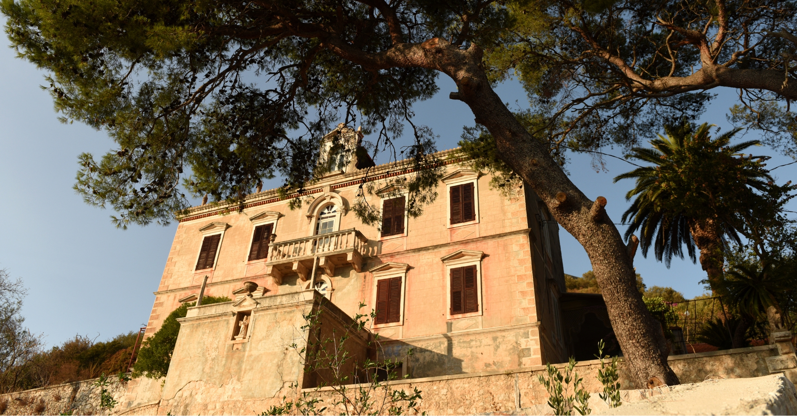

Ovo skriveno blago privlači posetioce svojom netaknutom prirodom, bogatom istorijom i tradicionalnom mediteranskom atmosferom.
Ostrvo Lastovo nudi nezaboravno iskustvo za ljubitelje prirode.
Sa svojim gustim borovim šumama, kristalno čistim morem i slikovitim uvalama, ovo ostrvo je raj za istraživače i avanturiste.
Posetioci mogu uživati u brojnim aktivnostima na otvorenom, poput planinarenja, biciklizma, ronjenja ili jednostavno opuštanja na prelepim plažama.
Izvanredna tišina i spokoj koju nudi Lastovo daju vam priliku da se povežete sa prirodom i da se oslobodite stresa i užurbanosti svakodnevnog života.
Ostrvo koje nije podleglo vrevi turizma, utočište je za one koji tragaju za istinskim, autentičnim iskustvom.
Poseta Lastovu je kao putovanje kroz vreme, vraća vas u neko prošlo doba kada su mir i jednostavnost bili najveće bogatstvo.
Ovde, svaki trenutak je prilika za dublje uživanje u životu i otkrivanje skrivenih dragulja koji čekaju da budu otkriveni.
Zato, dozvolite sebi luksuz spokojnog odmora i upustite se u avanturu istraživanja Lastova - ovo malo ostrvo krije više nego što možete i zamisliti.
Evo nekoliko najlepših plaža koje vredi posetiti:
1. Plaža Saplun
Ova divlja plaža nalazi se na zapadnoj obali ostrva i poznata je po svom miru i netaknutoj prirodi.
Okružena je bujnim zelenilom i tirkiznim morem, pruža idealno mesto za opuštanje i uživanje u tišini.
Plaža Saplun
2. Plaža Mihajla
Smestena u slikovitom zalivu, plaža Mihajla očarava svojim belim šljunkom i kristalno čistim morem.
Mirna i skrivena, ova plaža je idealna za one koji traže intimnost i tišinu.
3. Plaža Lučica
Sa svojim plitkim i toplim vodama, plaža Lučica je omiljeno mesto za kupanje i sunčanje.
Okružena je borovom šumom koja pruža prirodnu hladovinu i čini je idealnom destinacijom za porodične izlete.
4. Plaža Pasadur
Ova šarmantna plaža nalazi se u istoimenom malom mestu i poznata je po svojoj netaknutoj lepoti i kristalno čistim vodama.
Okružena je bujnom vegetacijom i pruža savršeno okruženje za opuštanje i uživanje u prirodi.
Plaža Pasadur
Svaka od ovih plaža ima svoj jedinstveni šarm i privlačnost, nudeći posetiocima priliku da se oslobode stresa i uživaju u miru i lepoti prirode na ostrvu Lastovo.
Na ostrvu Lastovo možete uživati u autentičnoj dalmatinskoj kuhinji u brojnim restoranima i konobama koji nude sveže pripremljene lokalne specijalitete.
Evo nekoliko najboljih mesta za jelo na ostrvu Lastovo:
1. Restoran Fumari
Ovaj restoran se nalazi u centru grada Lastova i poznat je po svojoj izvrsnoj ribljoj kuhinji.
Nudeći sveže ulovljenu ribu i plodove mora, restoran "Fumari" je omiljeno mesto među posetiocima koji žele da probaju autentične dalmatinske specijalitete.
2. Konoba Augusta Insula
Smeštena u slikovitom zalivu Zaklopatica, konoba "Augusta Insula" nudi tradicionalna jela pripremljena po starim receptima.
Specijaliteti poput jagnjetine ispod sača, domaćih testenina i sveže salate od lokalnih sastojaka čine ovu konobu nezaobilaznom destinacijom za gurmane.
Konoba Tramontana
Ova tradicionalna konoba smestena je u selu Pasadur i poznata je po svojoj autentičnoj atmosferi i domaćoj kuhinji.
Posetioci mogu uživati u raznovrsnim jelima, uključujući tradicionalne dalmatinske specijalitete poput pašticade, brudeta i lignji na žaru.
